11. a 12. týden: Počítačem řízený stroj
Během jedenáctého a dvanáctého týdne bylo úkolem v týmu navrhnout a postavit stroj řízený počítačem.
Níže popisuji, jak jsem k našemu stroji přispěl já. Pokud vás zajímá projekt jako celek, nahlédněte do hlavní dokumentace týmu AA.
Kreslení světlem
Rozhodli jsme se vytvořit stroj pro kreslení světlem. Takové zařízení pohybuje světelným zdrojem (např. LED), čímž ve vzduchu vytváří různé vzory a obrazce. Ty se následně zachytí fotoaparátem v režimu dlouhé expozice, který díky delšímu sběru světla zaznamená světelné stopy.
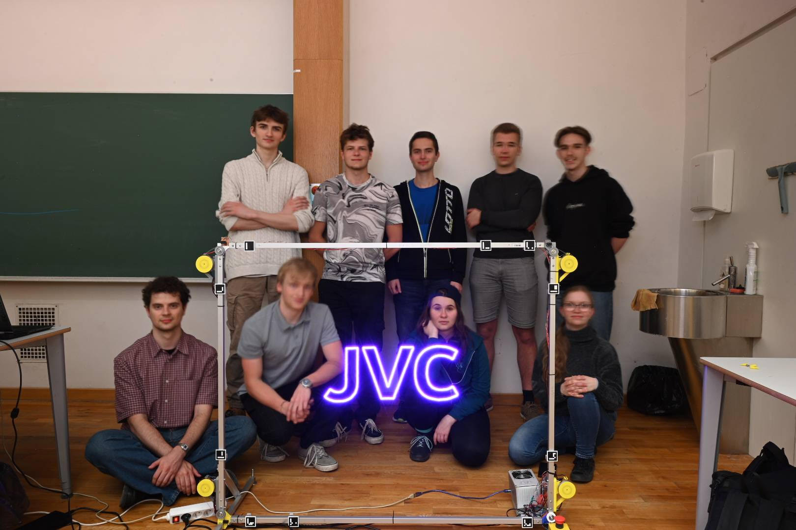
Zvolili jsme obdélníkovou konstrukci se dvěma osami pohybu. Pohyb LED zajistí čtyři navijáky umístěné v rozích konstrukce, které budou synchronně navíjet a odvíjet lanka s uchycenou LED.
Navijáky
Společně s Adamem Pospíšilem jsme dostali za úkol tyto navijáky navrhnout a postavit. Hlavními výzvami byly: zajistit předvídatelné navíjení tuhého ocelového lanka a zároveň přes toto lanko napájet pohyblivou LED. Abychom umožnili přenos elektrického proudu z pevné části na rotující naviják, museli jsme vyrobit vlastní rotační sběrač.
Jako pohon jsme využili čtyři krokové motory NEMA 17 ve dvou variantách: dva silnější (0,4 Nm) a dva slabší (0,28 Nm). Silnější motory umístíme do horních rohů konstrukce, kde se očekává větší tah lanka při zvedání, zatímco slabší motory přijdou do spodních rohů. Podle hrubých výpočtů by oba typy motorů měly zvládnout požadovanou zátěž i bez nutnosti použití převodů.
Návrh držáku navijáku
Držák musí být dostatečně pevný, aby unesl hmotnost motoru s navijákem, ale také aby odolal tahu lanka. Ocelové lanko je totiž poměrně tuhé a musí být neustále napínáno dvěma protilehlými navijáky, jinak by hrozilo jeho vymotání.
Díly jsme modelovali v programu Fusion 360. Krokové motory se k držáku uchytí pomocí čtyř šroubů M3 × 12 mm. Při návrhu úchytu motoru jsme vycházeli z následujících nákresů:
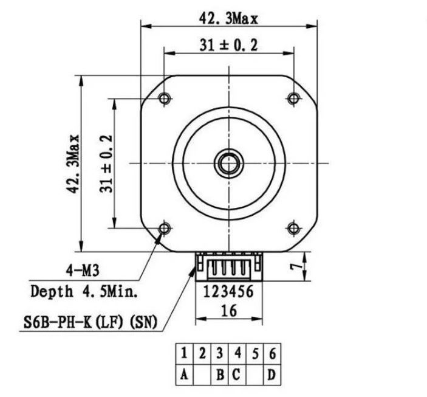

Kromě samotného motoru s navijákem ponese držák také měděný plíšek. Ten poslouží jako zmíněný sběrač pro přenos elektrického proudu na navíjející se lanko.
Držák se k hliníkovým profilům konstrukce (o průřezu 20 × 20 mm) připevní pomocí dvou šroubů M4. Ty projdou předvrtanými otvory v profilech a na druhé straně se zajistí maticemi. Abychom nebyli zcela závislí na přesnosti vyvrtaných otvorů, navrhli jsme držák s podélnými drážkami pro šrouby. Ty umožní drobný posuv a jemné doladění finální polohy.
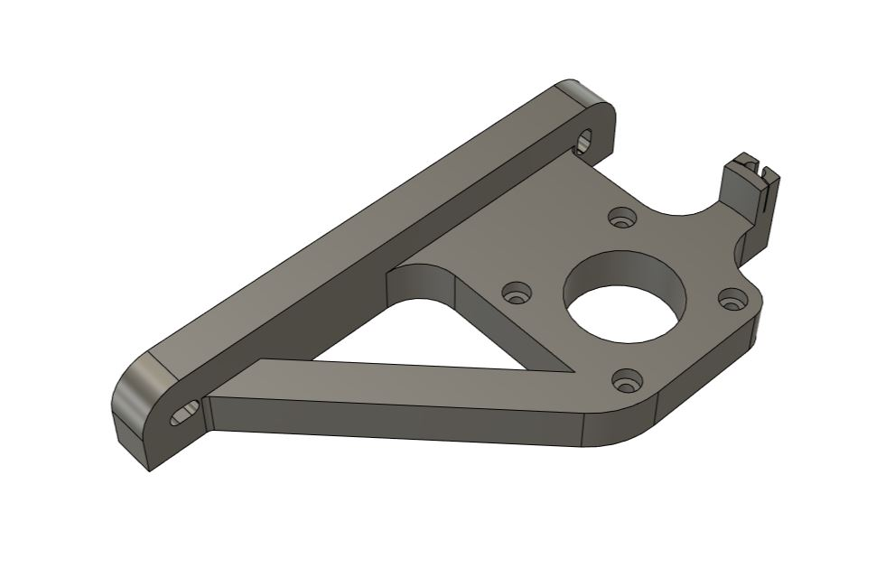
Návrh navijáku a sběrače
Při návrhu navijáku jsme museli vyřešit několik překážek. První z nich bylo rovnoměrné skládání lanka. Pro přesné řízení pohybu LED je důležité znát aktuální průměr navijáku, ten se ale s každou nově navinutou vrstvou lanka zvětšuje.
Prvním zvažovaným řešením byl naviják ve tvaru dlouhého válce se spirálovitou drážkou, do které by se lanko namotávalo vždy do jedné vrstvy. Takový naviják by ale byl zbytečně velký a tuhé ocelové lanko by se do něj špatně navádělo. Druhou variantou byl naviják s 1 mm širokou a cca 3 cm hlubokou drážkou, kde by každá otočka tvořila novou vrstvu. I v tomto případě by byl naviják velký a navádění lanka do takto úzké štěrbiny by bylo obtížné.
Nakonec jsme se rozhodli pro naviják s drážkou širokou 3,2 mm a hlubokou 1 cm. Do jedné vrstvy se tak bezpečně vejdou tři otočky lanka. Softwarovou kompenzaci zvětšujícího se průměru vyřešíme na základě experimentálního zjištění, kolik otoček se průměrně do jedné vrstvy vejde.
Vnitřní průměr navijáku jsme stanovili na 4,5 mm, což je dostatečně velké na to, aby se kolem něj dalo tuhé lanko ohnout. Pro snazší navádění lanka jsme okraje drážky navijáku zkosili. Konec lanka se provléká otvorem z drážky až na zadní stranu navijáku, kde je zajištěn třemi šroubky. Tyto šroubky navíc slouží ke spojení obou polovin navijáku k sobě.
Po vnějším obvodu navijáku nalepíme hliníkovou lepicí pásku, kterou přehneme přes hranu až pod zmíněné tři šroubky. Ty tak přitlačí ocelové lanko k hliníkové fólii, čímž se vytvoří vodivé spojení. Na držák se následně upevní měděný plíšek (široký 7,5 mm a dlouhý 6 cm) ohnutý tak, aby zvenčí na dvou místech pružně doléhal na hliníkovou pásku.
Naviják se pak připevní k hřídeli krokového motoru pomocí šroubku M3 a závitové vložky.
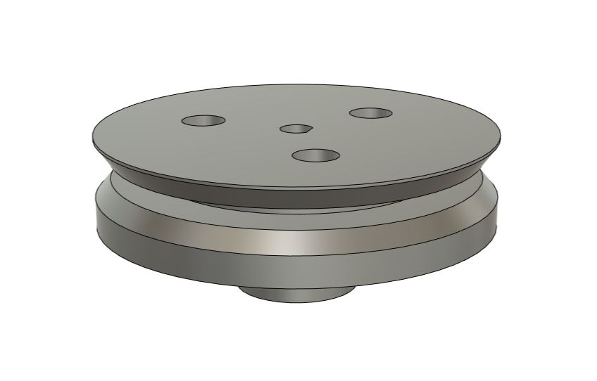

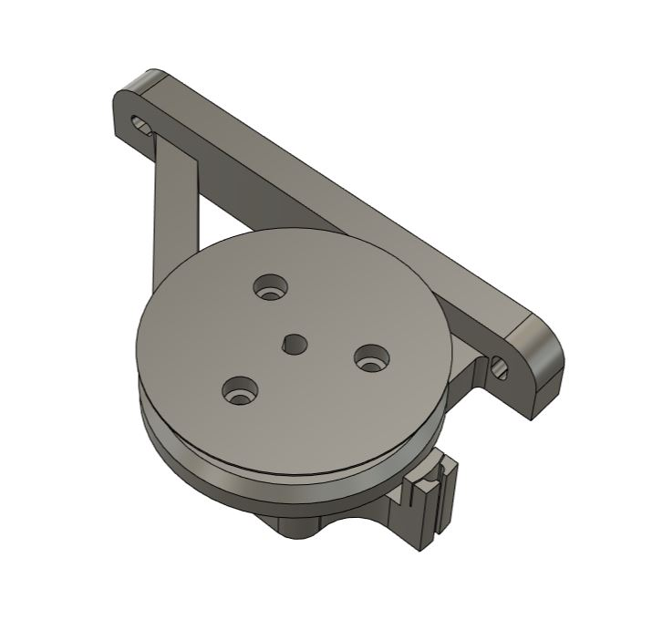
3D tisk
Hotové modely jsme z Fusionu 360 vyexportovali do formátu 3MF (přes Utilities -> 3D print) a připravili pro tisk v programu Bambu Studio. Jelikož jsme měli k dispozici převážně jen zbytky různých filamentů, tiskli jsme z materiálů PLA a PETG o různých barvách. Tisk probíhal na školní 3D tiskárně Bambu Lab A1 Mini s 0,4 mm tryskou s následujícím nastavením:
- Profil: 0,20 mm Standard @BBL A1M
- Nozzle temperature (teplota trysky): 210 °C pro PLA, 240 °C pro PETG
- Bed temperature (teplota podložky): 65 °C pro PLA, 70 °C pro PETG
- Wall loops (perimetry): 4
- Sparse infill density (hustota výplně): 25 %
- Sparse infill pattern (vzor výplně): Gyroid
- Outer wall speed (rychlost vnější stěny): 100 mm/s
Zbylá nastavení jsme ponechali na výchozích hodnotách vybraného tiskového profilu.
Pro otvory zapuštěných hlaviček šroubků, které drží pohromadě naviják, bylo nutné využít podpěry. Nastavili jsme je následovně:
- Type (typ): Tree (auto)
- Top Z distance (mezera v ose Z): 0,25 mm
Ostatní parametry podpěr zůstaly výchozí.
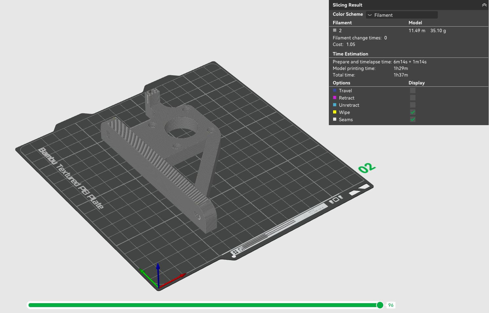
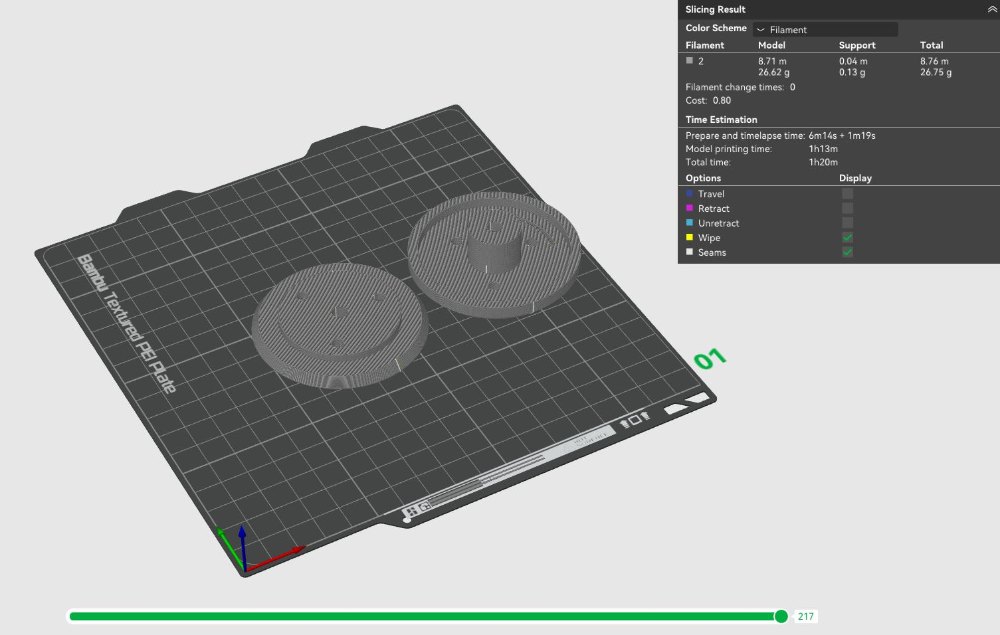
Během tisku se objevil problém s nekvalitně vytištěnými převisy u navijáku. Hrubý povrch zasahoval i do míst, kam se měla lepit hliníková páska, kde je potřeba dokonale rovný podklad. Tato místa jsme proto zabrousili brusným papírem a zbývající problémové díly jsme raději vytiskli na tiskárně Prusa při poloviční rychlosti.

Sestavení
Ve spěchu jsem bohužel nechal vytisknout všechny navijáky stejné, ačkoliv měly být v zrcadlově převrácených párech. Ve dvou dílech bylo tedy nutné vyvrtat nový otvor pro protažení lanka.
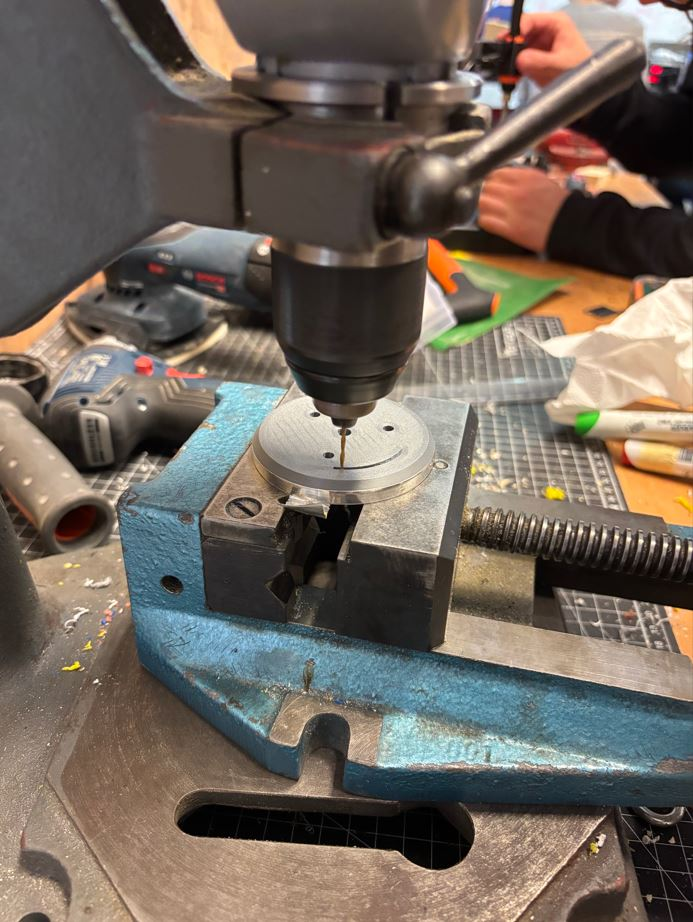
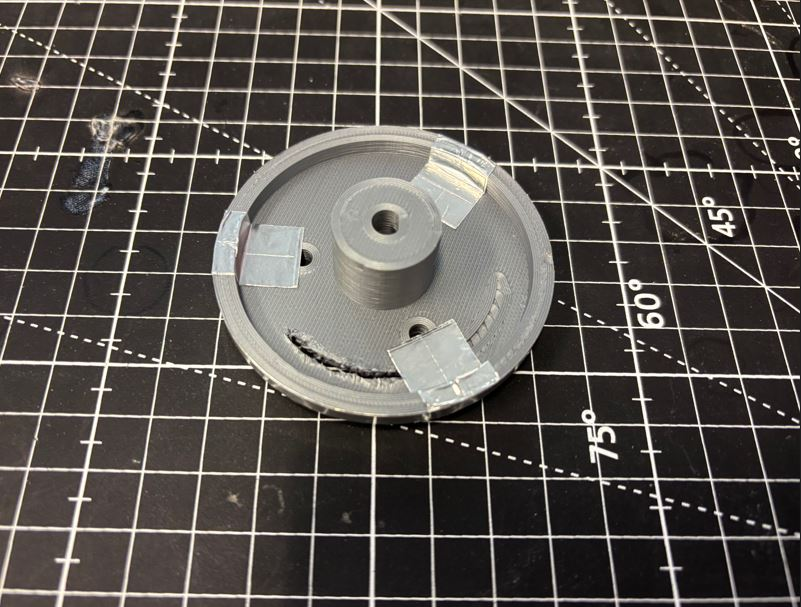
Jelikož pájecí hrot pro instalaci závitových vložek nebyl dostatečně dlouhý, bylo třeba být kreativní. Vložku jsem zčásti prošrouboval a hrot páječky jsem přikládal ke šroubku, který přenášel teplo k vložce.
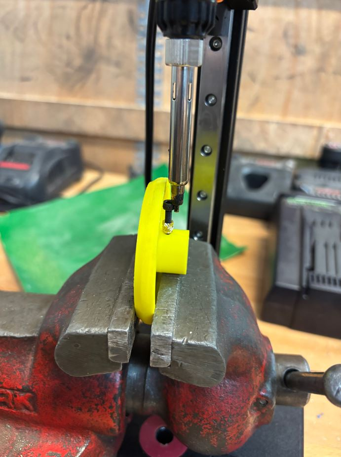
Následně se navijáky odmastily isopropylalkoholem a Adam je polepil hliníkovou fólií.
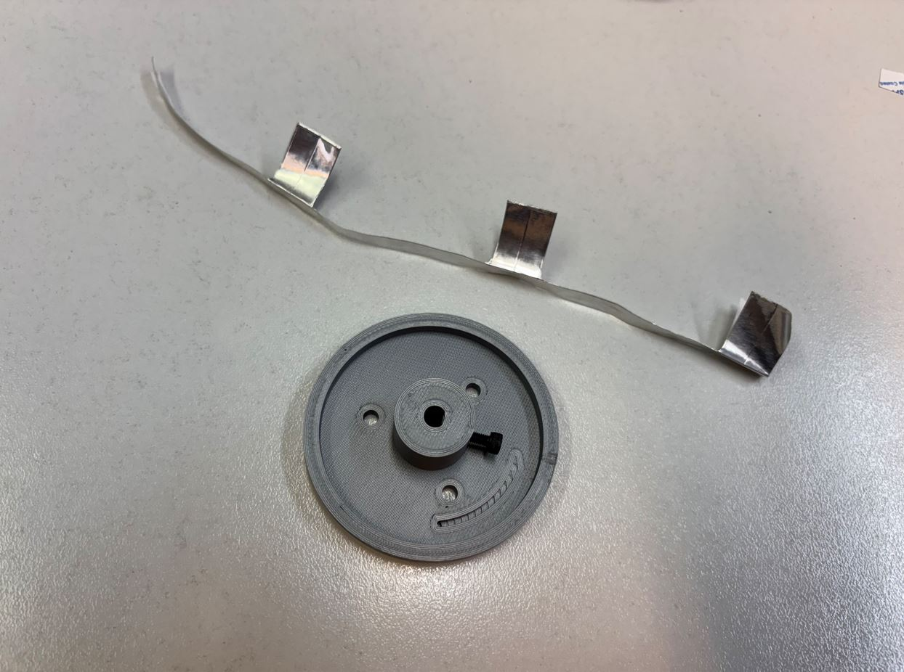
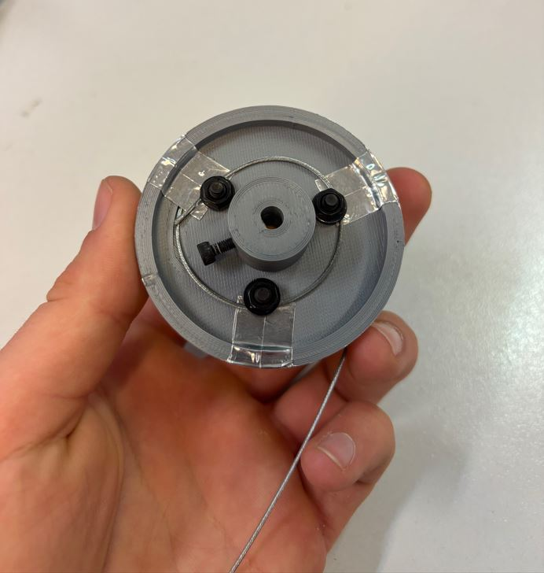


Sběrač vznikl z měděného plíšku, který byl nejdřív kancelářskými nůžkami rozstřižen podélně na dvě poloviny široké 7,5 mm a následně nastříhán na délku 6 cm.

Mé vedlejší činnosti
Kromě práce na navijácích jsem se podílel na:
- sestavení Fusion návrhů ostatních členů týmu do jedné finální sestavy,
- 3D tisku ostatních dílů,
- pájení dlouhých kabelů krokových motorů,
- různých dalších maličkostech.
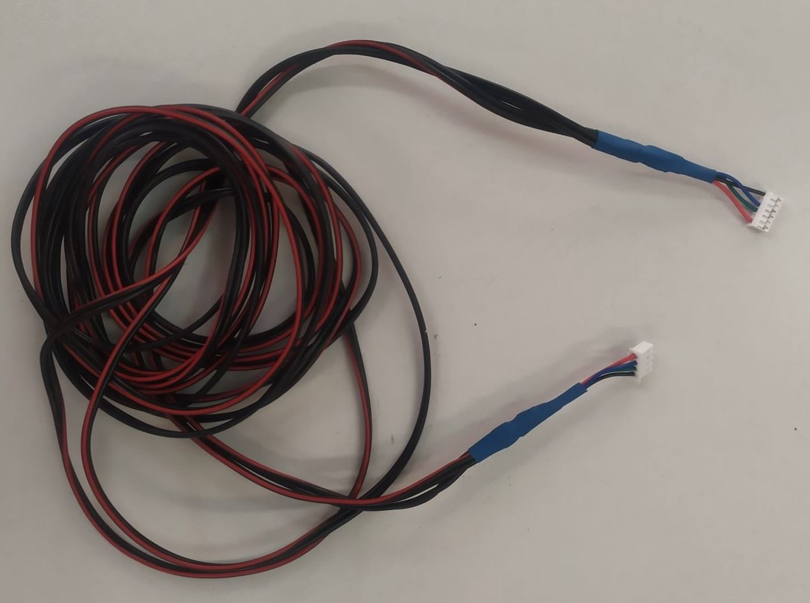
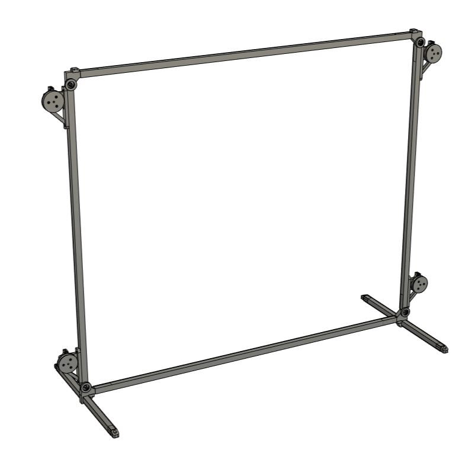